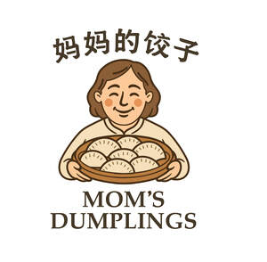

Trade Mark Journal No.2025/045 7 November 2025
UK00004283991 27 October 2025 (21,29,30,35,43)

- Class 21
- Basins [bowls]; Bowls [basins]; Containers for household or kitchen use; Cookery moulds; Cooking pots; Cruets; Cups; Dishes; Drinking glasses; Earthenware saucepans; Frying pans; Gloves for household purposes; Griddles [cooking utensils]; Heat-insulated containers; Kitchen containers; Mess-tins; Porcelain ware; Rolling pins, domestic; Toothpick holders; Trays for household purposes.
- Class 29
- Albumin milk; Bone oil for food; Bouillon; Broth; Bulgogi; Charcuterie; Choucroute garnie; Crayfish, not live; Cream [dairy products]; Croquettes; Fish-based foodstuffs; Freeze-dried meat; Freeze-dried vegetables; Ham; Meat jellies; Meat, preserved; Meat, tinned; Omelets; Pickles; Sausages.
- Class 30
- Baozi; Biscuits; Bread; Cakes; Cereal preparations; Cheeseburgers [sandwiches]; Chocolatines; Coffee; Condiments; Instant rice; Jiaozi; Kimchi pancakes; Meat gravies; Meat pies; Noodle-based prepared meals; Onigiri; Pâtés en croûte; Pelmeni; Ravioli; Tea.
- Class 35
- Administration of consumer loyalty programs; Administrative services for the relocation of businesses; Advertising; Advertising agency services; Bill-posting; Business inquiries; Business investigations; Business management and organization consultancy; Business management of hotels; Commercial administration of the licensing of the goods and services of others; Commercial information agency services; Consumer profiling for commercial or marketing purposes; Corporate communications services; Cost price analysis; Marketing; Negotiation and conclusion of commercial transactions for third parties; Presentation of goods on communication media, for retail purposes; Procurement services for others [purchasing goods and services for other businesses]; Provision of an online marketplace for buyers and sellers of goods and services; Sales promotion for others.
- Class 43
- Accommodation bureau services [hotels, boarding houses]; Bar services; Café services; Cafeteria services; Canteen services; Decorating of food; Food and drink catering; Food sculpting; Holiday camp services [lodging]; Hotel reservations; Hotel services; Information and advice in relation to the preparation of meals; Personal chef services; Reception services for temporary accommodation [management of arrivals and departures]; Rental of cooking apparatus; Rental of drinking water dispensers; Rental of temporary accommodation; Restaurant services; Self-service restaurant services; Udon and soba restaurant services.
Dalian Zhongmaite Commercial Management Co., Ltd.
Representative: YH Consulting Limited